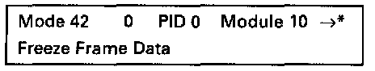

Freeze Frame Data, Mode 2
NOTE:If a malfunction is detected by the Engine Control Module (ECM) and is then stored, simultaneously, the operating conditions existing at the time the malfunction was stored will also be stored, and can be interrogated via mode 2.
Breakdown of the (PID) identification parameters, diagnostic data. Mode 1: Current Data
- Press -2- button to select mode 2 freeze frame data.

Display will appear as shown
- Press -> button.
Module 10* or 1A* will be activated (alternately):
- Module 10 = Engine Control Module (ECM) -J220-.
- Module 1A = Transmission Control Module (TCM) -J217-.
- Press -> button, and the operating conditions will be printed out as a block, assuming there is a DTC stored in DTC memory.
- Mode 2 can be exited by pressing the -C- button.